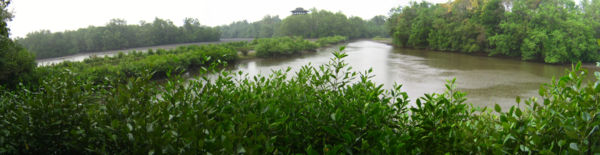
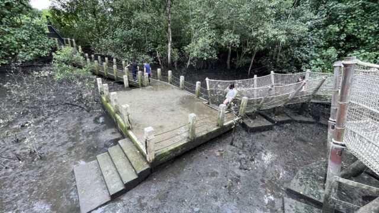

Singapore's first wetland reserve, Sungei Buloh can be found in the northwest of Singapore. Did you know this place used to be a fish and prawn farm?
Though the reserve can be pretty inaccessible to non-drivers, the wetland reserve is one of the best places to escape to especially with the lack of travel due to the pandemic. You can even see Malaysia (and be connected to Malaysia phone service providers) when you are deep in the reserve.
Migratory bird rest station
Singapore is located in the middle of the East Asian-Australasian Flyway and is visited by migratory birds from the period of September to March. Many of these migrants rest and feed at the highly productive mudflats of Sungei Buloh, attracting birdwatchers in flocks (get the pun?)
If you want to join in the fun, come prepared with water, sunblock and binoculars/cameras! A word of caution, crocodiles might sometimes swim over from Malaysis to Sungei Buloh, so do keep your eyes peeled.
Mud experience
In Sungei Buloh, there is a place where visitors can enjoy walking in the mud and get a closer look at the animals found there. This is only possible in the low tide when water levels are low, and you might just get a sniff of the hydrogen sulfide produced by bacteria living in the mud.
The mud experience area is currently closed due to the pandemic, so do check out the NParks website for further updates. Click here to head to their website.